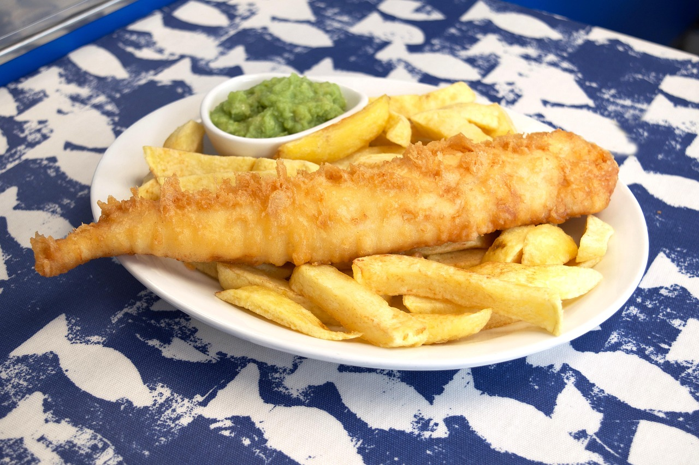

Fish and Chips

Description:
Fish and chips is a hot dish consisting of battered and fried fish, served with chips.
Often considered the national dish of the United Kingdom, fish and chips originated in England in the 19th century.
Ingredients:
- 125g plain flour
- 125g corn flour
- salt
- cold water
- 4 cod fillets
- 4 white potatoes
- 1 litre vegetable oil
- sea salt
- 1 lemon
- parsley
- malt vinegar
Steps:
- Preheat the vegetable oil in a deep fryer to 180°C (350°F), or until a cube of bread browns in 15 seconds when added to the oil.
- Peel the potatoes and cut into thick wedges. Deep-fry the potatoes in batches for 6–8 minutes or until they are crisp and golden.
- Remove from the oil, and drain on kitchen paper. Sprinkle with sea salt and keep warm.
- In a bowl, whisk together the plain flour, corn flour, salt, and enough cold water to form a batter.
- Cut the fish into thick slices, then coat in the batter.
- Deep fry the fish in batches for 5–6 minutes, depending on the size of the fish. Remove and drain on kitchen paper.
- Transfer the fish and chips to serving plates and garnish with lemon wedges and sprig of parsley. Or for a fun, traditional twist, place the fried fish and chips on brown paper or newsprint.
- Top with salt and/or vinegar. Typically the lemon wedges are squeezed over the fish and the vinegar is sprinkled on the chips. Also can be served with pickles, pickled onions, tartar sauce, pickled eggs, and mushy peas.
Home